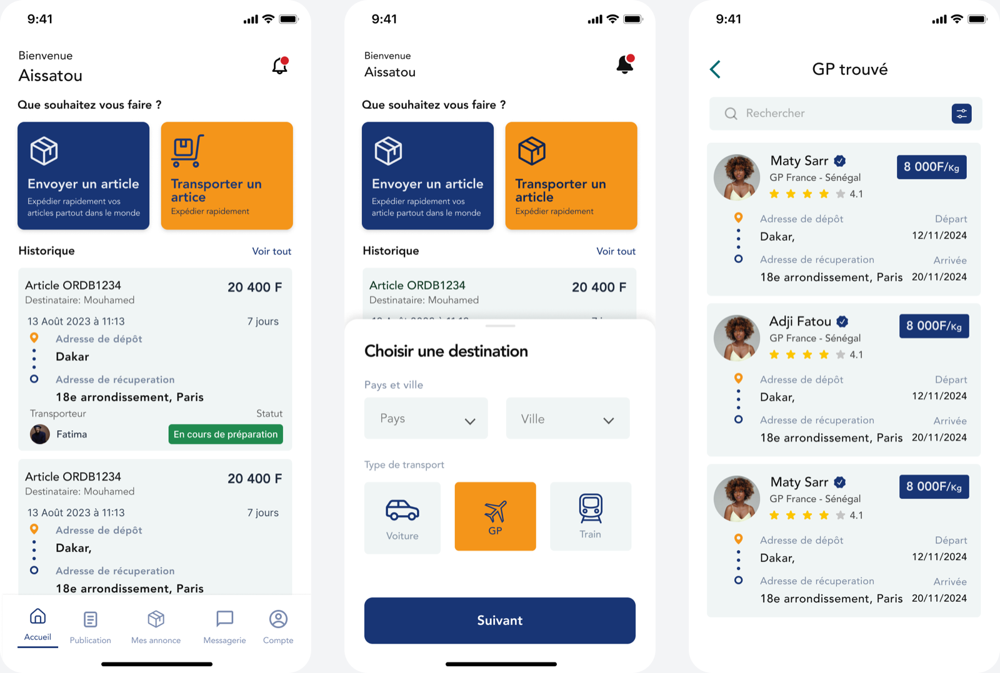
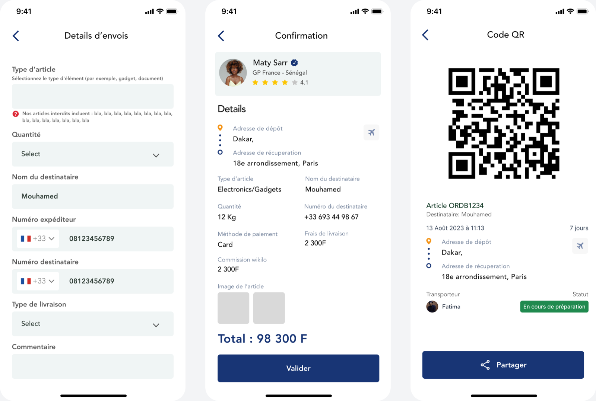
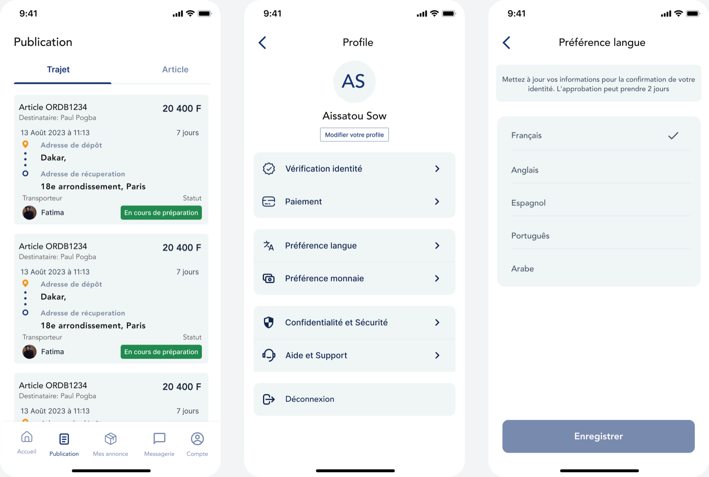

Wikilo
UI/UXApp

A propos du projet
WIKILO est une application mobile bilingue dédiée à l'univers du voyage.
L'appli wikilo facilite la mise en Relation pour le transport Express de colis entre particuliers.


